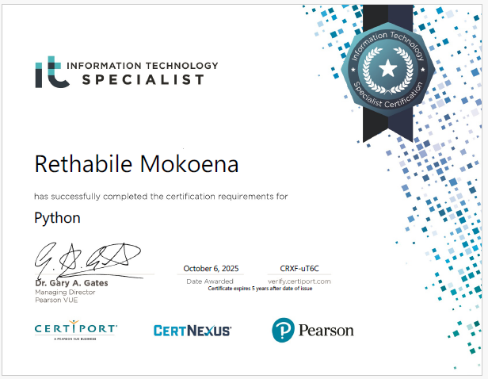
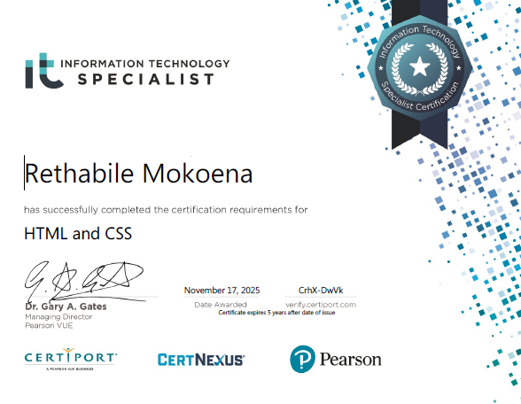

I am an certified IT specialist and an aspiring Junior Web Developer still discovering the path that fits me best. I find peace in technology — in the way small pieces of logic can build something meaningful.
I’m passionate about learning, and helping people through technology. I believe empathy is at the core of great design and great code.
I thrive in spaces where learing meets purpose.Whether I'm debugging a stubborn script or designing a clean layout, I am driven by the idea that tech should feel more alive - intuitive, comforting.
“Technology may be logical, but it speaks best when it feels human.”
I believe that technology has the power to connect people and bring peace into spaces that feel distant. Let us build solutions that make people’s lives easier — not just with code, but with understanding.


“Coding isn’t just about solving problems — it’s about creating something that makes someone’s day a little better.”